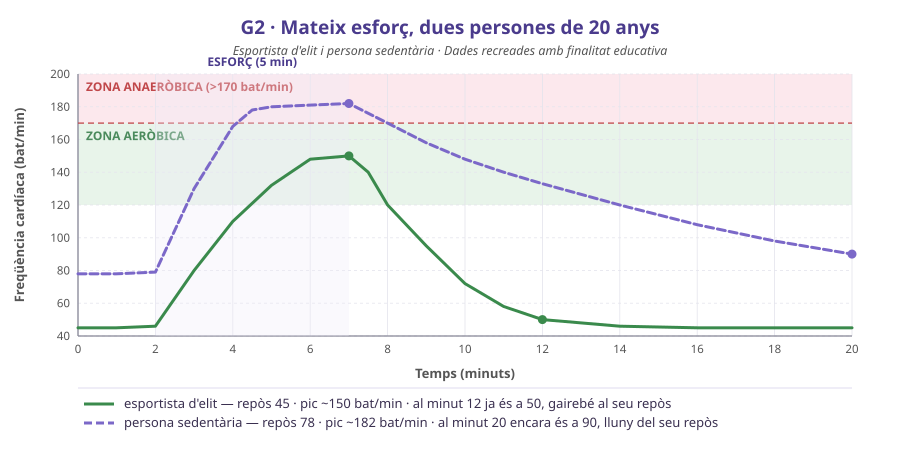
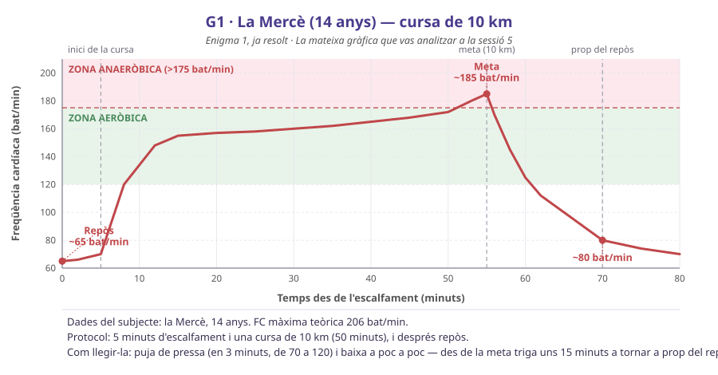
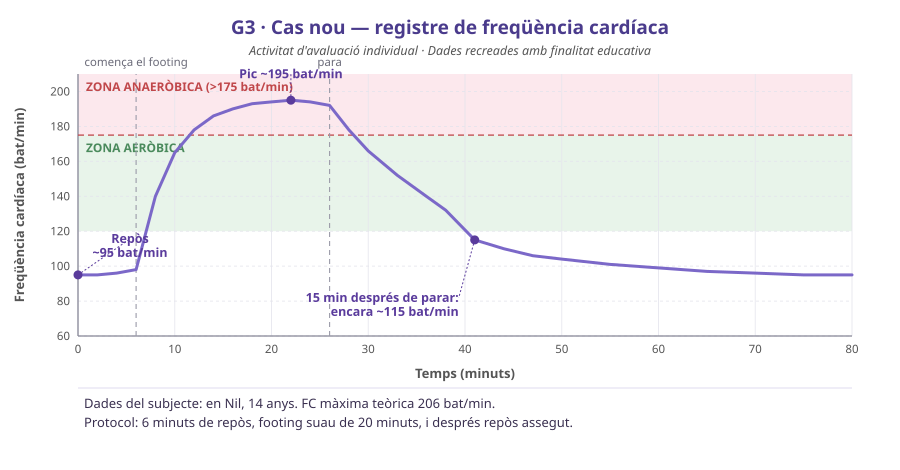

① Enigma 2 — en Marc Fontana. Escriu la cadena completa, del ferro fins a la fatiga.
Cada gram d'hemoglobina pot transportar aproximadament 1,34 mL d'oxigen. El Marc té 9,2 g/dL d'hemoglobina; una persona sana de la seva edat, 14 g/dL. (Recorda: 1 dL = 0,1 L, o sigui que en un litre hi ha 10 dL.)
② Calcula quants mL d'oxigen porta un litre de la sang del Marc i quants en porta un litre de sang sana. Escriu els dos càlculs.
③ Perquè li arribi als músculs la MATEIXA quantitat d'oxigen cada minut, quantes vegades més sang ha de moure el cor del Marc? Fes servir Q = volum de cada batec × FC per explicar per on ho aconsegueix.
④ Enigma 1. La gràfica de la Mercè és asimètrica. Explica-ho amb els dos mecanismes que hi intervenen i digues quin dels dos és el que fa que la baixada duri minuts i no segons.
Qui és: en Marc Fontana té 20 anys, s'entrena cada dia i té una FC en repòs de 82 bat/min (abans no era així: fa un any la tenia a 58).
| Valor | El Marc | Normal | Com està |
|---|---|---|---|
| Hemoglobina | 9,2 g/dL | 13,0 – 16,5 | baixa |
| Ferritina (reserva de ferro) | 8 ng/mL | 30 – 300 | baixa |
| Eritròcits | 4,1 milions/µL | 4,5 – 5,9 | una mica baixa |
| Urea | 32 mg/dL | 17 – 49 | normal |
| Creatinina | 0,9 mg/dL | 0,7 – 1,3 | normal |
| Leucòcits | 6.200 /µL | 4.000 – 10.000 | normal |
🎨 Vermell = fora del normal · verd = dins del normal. Fixa-t'hi: els residus que filtra el ronyó (urea i creatinina) són normals.
Els dos subjectes tenen 20 anys i fan el mateix esforç durant 5 minuts, de manera que comparteixen FC màxima teòrica (200) i llindar anaeròbic (170). Tot el que els diferencia és l'entrenament — i això vol dir que qualsevol diferència que trobeu a la gràfica només pot venir d'aquí. Aquest tipus de comparació, en què només canvia una cosa, és la que permet atribuir-hi una causa.

Escriviu tres afirmacions científiques (dada + explicació) sobre el repòs, el pic i la recuperació. No repetiu la mateixa idea tres vegades.
Imagineu que el Marc fa el mateix esforç de 5 minuts que aquestes dues persones. Dibuixeu la seva corba a sobre de la gràfica (o en aquest espai) i marqueu-hi els tres punts que la definirien: on comença, on arriba i on és al minut 20.
Justifiqueu cada un dels tres punts amb la cadena de l'anèmia. Atenció: el Marc no és sedentari — s'entrena cada dia. Què vol dir això per a la vostra predicció?
Com s'entrega: al final de la classe es recull aquest apartat i el full de sortida. L'informe de l'apartat 4 no es recull en paper — el continues i l'entregues al Classroom.
Aquí la comparació no és neta: els dos subjectes tenen la mateixa edat, però no han fet el mateix esforç. Això vol dir que no en pots atribuir automàticament les diferències a la fisiologia — llevat que la diferència vagi en contra del que faria esperar l'esforç. Llegeix la franja de sota de cada gràfica abans de començar.


Descriu la corba d'en Nil i compara-la amb la de la Mercè. Dona tres parells de xifres concretes (repòs, pic i recuperació) i digues quina de les tres diferències és la més informativa i per quina raó.
Formula la teva hipòtesi sobre en Nil i digues quin valor de l'anàlisi de sang esperes trobar alterat.
Ara escriu quin resultat de l'anàlisi faria caure la teva hipòtesi, i quina altra explicació hauries de buscar llavors.
Imagina que en Nil pren ferro durant tres mesos i es recupera. Dibuixa com seria llavors la seva corba per al mateix footing suau.
Digues quins dos trets de la corba han de canviar perquè puguem afirmar que el tractament ha funcionat, i per què no n'hi ha prou amb que en canviï només un.
Els eritròcits viuen uns 120 dies i el moll de l'os no en pot fabricar de nous d'un dia per l'altre. Això et diu alguna cosa sobre quan es podria repetir la prova.
glucosa + O₂ → CO₂ + H₂O + ATP
Fixa-t'hi: d'aquesta reacció en surten CO₂ i aigua, no urea. La urea ve d'una altra banda: de les proteïnes que sobren. Per això són dues cadenes i no una.
① Recorre els quatre aparells (digestiu, respiratori, circulatori i excretor) i explica, per a cadascun, com el queda afectat el fet que al Marc li falti ferro. Si algun no en queda afectat, digues-ho i justifica-ho.
② La nutrició no acaba quan la glucosa arriba a la cèl·lula. Escriu la reacció de la respiració cel·lular (unitat de la cèl·lula) i assenyala quin dels seus productes surt per cada porta d'eliminació.
El metge diu al Marc dues coses: (a) pren ferro i (b) no corris durant tres mesos.
③ Valora-les per separat. Quina de les dues ataca la causa i quina només l'efecte? Hi ha alguna que et sembli excessiva? Argumenta-ho des de la fisiologia, no des de l'opinió.
④ Hi ha una pregunta que el metge encara no ha respost: per quina raó al Marc li falta ferro. Explica per què tractar-lo sense respondre-la pot no ser suficient.
Rol A — investigador/a de camp: seccions 2 (Mètode) i 3 (Resultats).
Rol B — analista: seccions 4 (Discussió) i 5 (Conclusions).
La secció 1 la feu tots dos junts. Cadascú entrega les seves seccions i, a més, l'informe sencer com a annex.
Fes-lo servir només si vas faltar a la sessió 5 o no tens les teves mesures. Digues-ho a l'informe: «hem fet servir el joc de dades de reserva».
FC en repòs, 3 matins: 70 · 74 · 72 → mitjana 72 bat/min.
Prova d'esforç (3 min de repòs, 2 min de cursa a fons, 7 min de recuperació asseguda), en bat/min:
| min | 0 | 1 | 2 | 3 | 4 | 5 | 6 | 7 | 8 | 9 | 10 | 11 | 12 |
|---|---|---|---|---|---|---|---|---|---|---|---|---|---|
| FC | 73 | 72 | 74 | 72 | 132 | 178 | 141 | 118 | 104 | 96 | 90 | 87 | 85 |
La Berta té 14 anys: FC màxima teòrica 206 i llindar anaeròbic cap a 175. Amb el pic de 178 el toca just un moment — per això la cursa era curta i a fons.
Una bona pregunta identifica la variable que canvieu i la que mesureu.
A més del protocol, identifiqueu explícitament la variable independent, la dependent, què heu mantingut constant i quantes rèpliques heu fet.
| Moment | FC (bat/min) | % de la FC màx. | Zona |
|---|---|---|---|
Interpreteu la corba amb el mecanisme (no només amb la necessitat): què fa pujar la FC en segons i què fa que baixar costi minuts. Compareu-vos amb G1 i G2 dient què és comparable i què no (edat, esforç, entrenament).
Responeu la pregunta, i afegiu-hi dues limitacions reals de la vostra mesura i com les corregiríeu.
L'anèmia per falta de ferro és una de les mancances alimentàries més freqüents del món, i afecta molt més les noies adolescents que els nois. A partir del que sabeu de la cadena ferro → hemoglobina → oxigen, escriviu un paràgraf sobre per quina raó una analítica de rutina pot ser més útil que un consell genèric de «menja millor».
Acaba la teva part de l'informe i entrega-la al Classroom (termini: una setmana). Afegeix-hi, en tres línies escrites a mà, quina de les teves conclusions et sembla la més fràgil i quina mesura addicional faria falta per sostenir-la.
Abans de marxar: el full d'avaluació final (o el formulari del Classroom) — ⏱️ 12 min, individual.